利用分治处理汉诺塔问题
问题
给定三根柱子，记为 A、B 和 C 。起始状态下，柱子A 上套着 𝑛 个圆盘，它们从上到下按照从小到大的顺序排列。我们的任务是要把这 𝑛 个圆盘移到柱子C 上，并保持它们的原有顺序不变
- 圆盘只能从一根柱子顶部拿出，从另一根柱子顶部放入。
- 每次只能移动一个圆盘。
- 小圆盘必须时刻位于大圆盘之上。
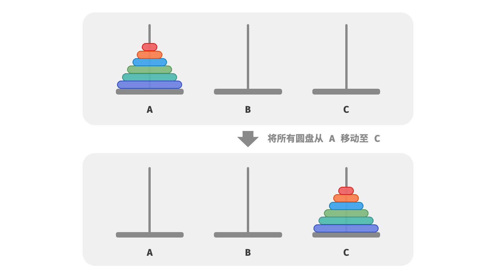
问题分析
对于问题 𝑓(1)
即当只有一个圆盘时，我们将它直接从 A 移动至 C 即可
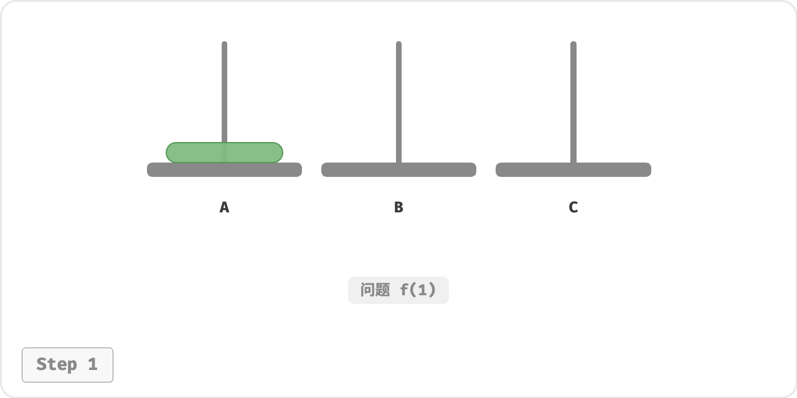
对于问题 𝑓(2)
即当有两个圆盘时， 由于要时刻满足小圆盘在大圆盘之上，因此需要借助
B 来完成移动。
- 先将上面的小圆盘从 A 移至 B 。
- 再将大圆盘从 A 移至 C 。
- 最后将小圆盘从 B 移至 C 。
解决问题 𝑓(2) 的过程可总结为： 将两个圆盘借助 B 从 A 移至 C 。其中，C 称为目标柱、B 称为缓冲柱。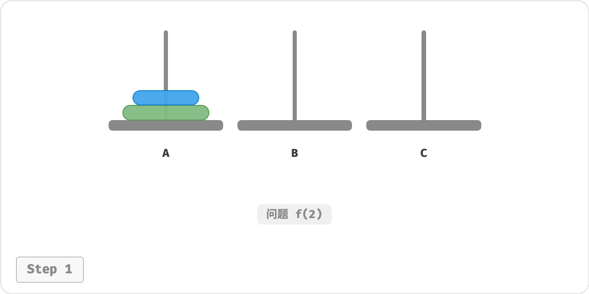
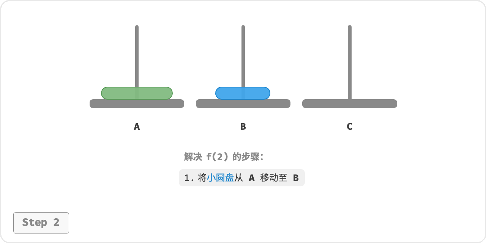
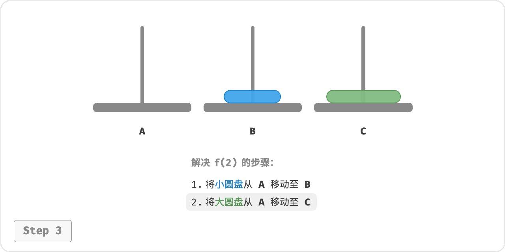
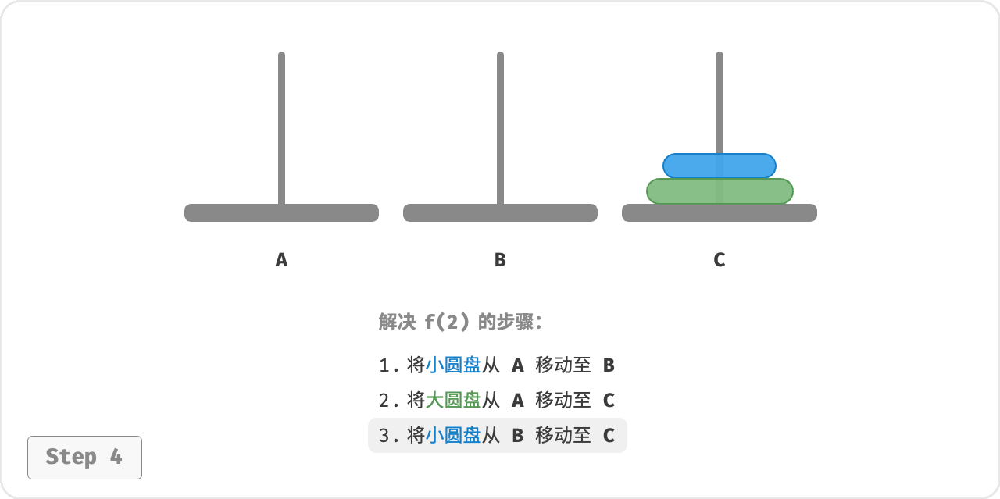
对于问题 𝑓(3)
即当有三个圆盘时，情况变得稍微复杂了一些。
因为已知 𝑓(1) 和 𝑓(2) 的解，所以我们可从分治角度思考， 将 A 顶部的两个圆盘看作一个整体, 这样三个圆盘就被顺利地从 A 移至 C 了。
- 令 B 为目标柱、 C 为缓冲柱，将两个圆盘从 A 移至 B 。
- 将 A 中剩余的一个圆盘从 A 直接移动至 C 。
- 令 C 为目标柱、 A 为缓冲柱，将两个圆盘从 B 移至 C 。
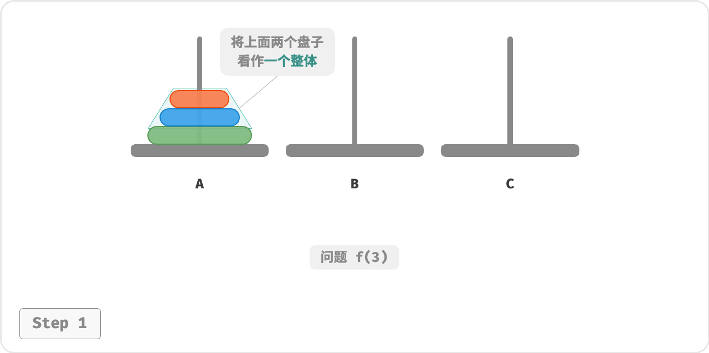
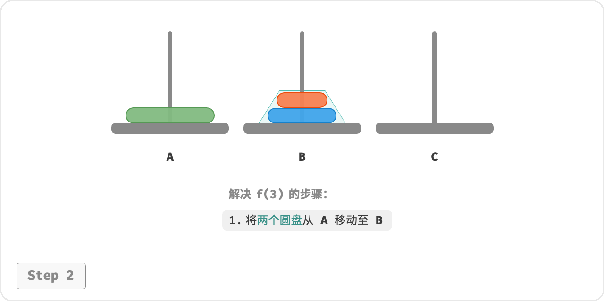
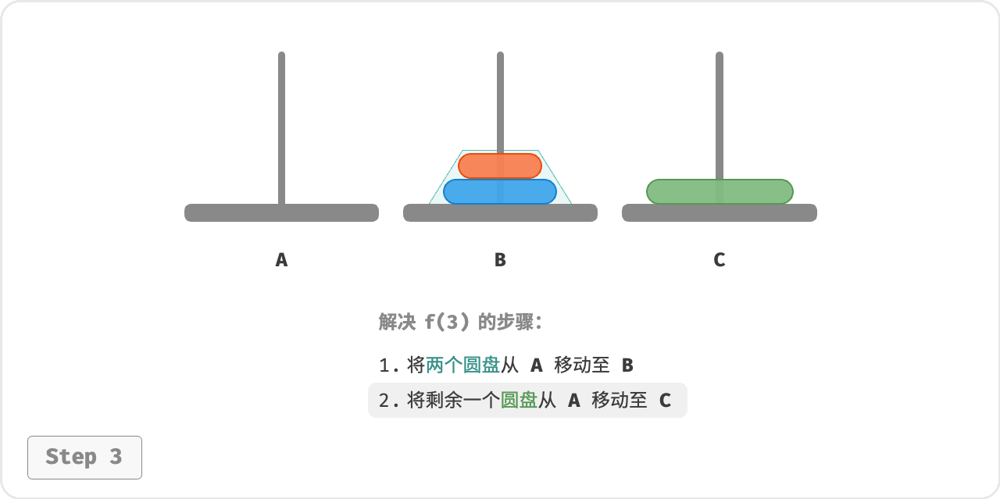
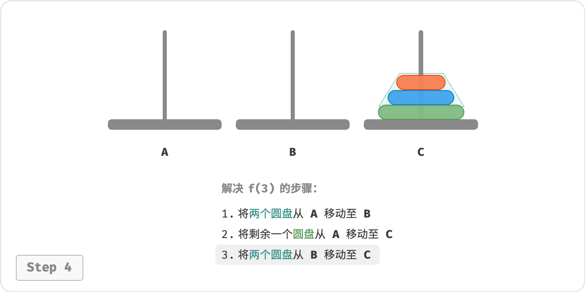
从本质上看， 我们将问题 𝑓(3) 划分为两个子问题 𝑓(2) 和一个子问题 𝑓(1) 。按顺序解决这三个子问题之后，
原问题随之得到解决。这说明子问题是独立的，而且解可以合并。
至此，我们可总结出下图所示的解决汉诺塔问题的分治策略：将原问题 𝑓(𝑛) 划分为两个子问题 𝑓(𝑛-1)
和一个子问题 𝑓(1) ，并按照以下顺序解决这三个子问题。
- 将 𝑛 - 1 个圆盘借助 C 从 A 移至 B 。
- 将剩余 1 个圆盘从 A 直接移至 C 。
- 将 𝑛 - 1 个圆盘借助 A 从 B 移至 C 。
对于这两个子问题 𝑓(𝑛 - 1) ， 可以通过相同的方式进行递归划分，直至达到最小子问题 𝑓(1) 。而 𝑓(1) 的
解是已知的，只需一次移动操作即可。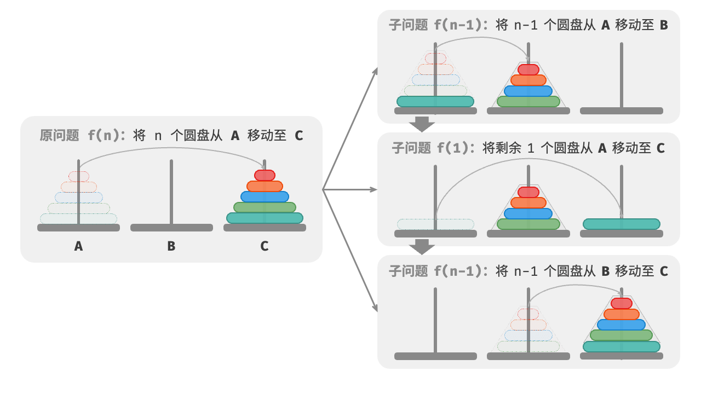
代码实现
1 | /* 移动一个圆盘 */ |